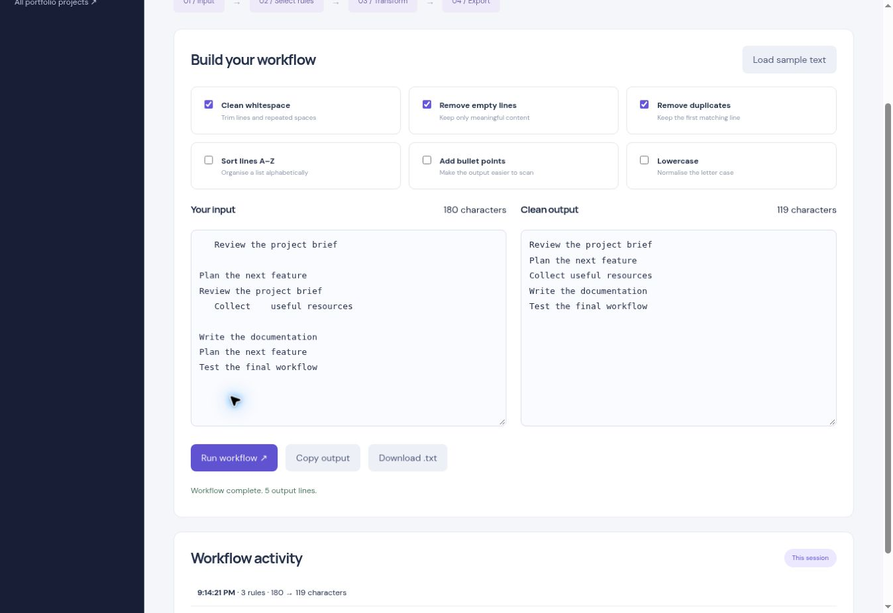

Input
Paste a list, notes, or other plain text into the input area.
AUTOMATION / TEXT PROCESSING
A configurable text-cleanup tool that turns repetitive editing into a reusable sequence of rules. Preview the output, copy it, or download a text file.

Actual application interface, shown with illustrative sample content.
THE IDEA
Cleaning lists by hand takes repeated edits: remove blanks, tidy spaces, find duplicates. Textcraft applies selected operations in a consistent order and keeps the result visible beside the input.
This application runs directly in the browser with no account required. Its scope is deliberately focused on an everyday workflow visitors can try immediately.
HOW IT WORKS
Paste a list, notes, or other plain text into the input area.
Choose whitespace cleanup, lowercase conversion, blank-line removal, deduplication, sorting, or bullets.
Apply the selected rules and compare input and output character counts.
Copy the result or export a text file. A session history records the latest five runs.
IMPLEMENTATION
Semantic HTML provides the structure, responsive CSS adapts the layout, and JavaScript handles the application state and interactions. Exports are generated locally in the browser.
Text is processed locally using deterministic rules, with no AI model or server request. Run history lasts for the current session; download any output you want to keep.
A PRACTICAL WALKTHROUGH
A transparent workflow for repeated plain-text cleanup.
Paste a list with extra spaces, blank lines, or repeated entries. Keeping the original beside the result makes the transformation easier to review.
Turn on whitespace cleanup, empty-line removal, or deduplication as needed. Sorting, lowercase conversion, and bullets are optional operations for different outputs.
Run the workflow and inspect the result. Copy it or download a text file; recent runs appear in the session history. These are deterministic rules rather than AI-generated text.
TRY IT YOURSELF